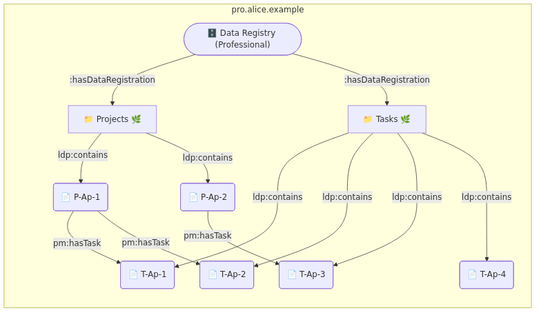

1. Introduction
This primer is intended to acompany [SOLID-INTEROP] and [SOLID-INTEROP-API]. Focusing on providing friendly introduction for developers of libraries intended for solid applications.
This document was developed along side the open-source TypeScript implementation [SAI-JS]
We will follow example of an application called Projectron, which manages projects and tasks. End user, named Alice, collaborates on projects with other Individuals and Organizations.
2. Shape Trees
Shape Trees [SHAPETREES] allow for the definition and validation of data hierarchies including which shapes [SHEX] should be used to validate data. In our examples we will use following Shapes and Shape Trees.
solidtrees : Project a shapetrees : ShapeTree ; shapetrees : expectsType shapetrees : Resource ; shapetrees : shape solidshapes : Project ; shapetrees : references uuid : 54b5e4f6-c6b5-4c9a-b885-cbf69d08370d . uuid : 54b5e4f6-c6b5-4c9a-b885-cbf69d08370d shapetrees : hasShapeTree solidtrees : Task ; shapetrees : viaShapePath "@<https://solidshapes.example/shapes/Project>~<https://vocab.example/project-management/hasTask>" .
solidshapes : Project { a [ pm : Project ] ; rdfs : label xsd : string ; pm : hasTask IRI * }
solidtrees : Task a shapetrees : ShapeTree ; shapetrees : expectsType shapetrees : ShapeTreeResource ; shapetrees : validatedBy solidshapes : Task .
solidshapes : Task { a [ pm : Task ] ; rdfs : label xsd : string }
Reference shape path documentation
3. Application
In this primer we will consider the use-case of a project management application
identified by https://projectron.example/#app Every application has public WebID Document providing information about it.
projectron : \#id a interop : Application ; interop : applicationName "Projectron" ; interop : applicationDescription "Manage projects with ease" ; interop : applicationAuthor acme : \#corp ; interop : applicationThumbnail projectron : thumb.svg ; interop : hasAccessNeedGroup projectron : \#need-group-pm . projectron : \#need-group-pm interop : accessNecessity interop : accessRequired ; interop : accessScenario interop : PersonalAccess ; interop : authenticatesAs interop : Pilot ; interop : hasAccessDecoratorIndex projectron : index ; interop : hasAccessNeed projectron : \#need-project . projectron : \#need-project a interop : AccessNeed ; interop : registeredShapeTree solidtrees : Project ; interop : accessNecessity interop : accessRequired ; interop : accessMode acl : read , acl : write . projectron : \#need-issue a interop : AccessNeed ; interop : registeredShapeTree solidtrees : Issue ; interop : accessNecessity interop : accessRequired ; interop : accessMode acl : read , acl : write ; interop : inheritsFromNeed projectron : \#need-project .
Access Needs explain what kind of data application works with. They use combination of § 2 Shape Trees and access modes to convey how the application can work with data.
Details can change based on experience from implementing Authorization Agent role
4. Authorization Flow
User always needs to authenticate first. For the rest of this primer we’ll be assuming that user has already authenticated, and that applicaction know WebID of the authenticated user.
4.1. Authorization Agent Discovery
Every user has an Authorization Agent which can be discovered from
their WebID Document via interop:hasAuthorizationAgent predicate.
alice : \#id a interop : Agent ; interop : hasAuthorizationAgent <https://auth.alice.example/> .
Here we see that Alice designates https://auth.alice.example/ as their Authorization Agent.
4.2. Application Registration Discovery
Application can discover Application Registration created for it by the user,
by performing HEAD or GET request on IRI denoting
user’s Authorization Agent. Response will include HTTP Link header relating
Application Registration to the application making the request using http://www.w3.org/ns/solid/interop#registeredApplication as link relation.
HEAD / HTTP / 1.1 Host : auth.alice.example Authorization : DPoP ....
HTTP / 1.1 200 OK Link : <https://projectron.example/#app>; anchor="https://auth.alice.example/bcf22534-0187-4ae4-b88f-fe0f9fa96659"; rel="http://www.w3.org/ns/solid/interop#registeredApplication"
Details in 1.1. Lookup Agent Registration ([SOLID-INTEROP-API])
4.3. User Consent
In case where application haven’t been registered yet it needs to initiate flow with Authorization Agent.
Add details as soon as defined for Authorization Agent
After successful flow aplication will be able to discover its registration.
5. Application Registration
Specification will change to store Access Grants in Application Registration
Application Registration can be considered an entry point to all the data
that user authorized it to access. Next step in discovery of that data
is the Access Receipt linked via interop:hasAccessReceipt predicate.
alice-auth : bcf22534-0187-4ae4-b88f-fe0f9fa96659 a interop : ApplicationRegistration ; interop : registeredBy <https://alice.example/#id> ; interop : registeredWith <https://jarvis.alice.example/#agent> ; interop : registeredAt "2020-04-04T20:15:47.000Z" ^^ xsd : dateTime ; interop : updatedAt "2020-04-04T21:11:33.000Z" ^^ xsd : dateTime ; interop : registeredApplication <https://projectron.example/#app> ; interop : hasAccessReceipt alice-auth : dd442d1b-bcc7-40e2-bbb9-4abfa7309fbe .
5.1. Access Receipt
Access Receipt links to all the Data Grants issued to the application
via interop:hasDataGrant predicate.
alice-auth : dd442d1b-bcc7-40e2-bbb9-4abfa7309fbe a interop : AccessReceipt ; interop : registeredBy <https://alice.example/#id> ; interop : registeredWith <https://jarvis.alice.example/#agent> ; interop : registeredAt "2020-09-05T06:15:01Z" ^^ xsd : dateTime ; interop : updatedAt "2020-09-05T06:15:01Z" ^^ xsd : dateTime ; interop : providedAt "2020-09-05T06:15:01Z" ^^ xsd : dateTime ; interop : fromAgent <https://alice.example/#id> ; interop : viaAgent <https://alice.example/#id> ; interop : hasAccessGrantSubject alice-auth : 3fcef0f6-5807-4f1b-b77a-63d64df25a69\#grant-subject ; interop : hasAccessNeedGroup <#need-group-pm> ; interop : hasDataGrant alice-auth : cd247a67-0879-4301-abd0-828f63abb252 , alice-auth : 9827ae00-2778-4655-9f22-08bb9daaee26 , alice-auth : 7b2bc4ff-b4b8-47b8-96f6-06695f4c5126 , alice-auth : 54b1a123-23ca-4733-9371-700b52b9c567 , alice-auth : 12daf870-a343-4684-b828-c67c5c9c997a , alice-auth : 7be5a39f-583d-4464-8ad8-a39e24b99fce , alice-auth : c205e9da-2dc5-4d1f-8be9-a3f90c13eedc , alice-auth : 68dd1212-b0f3-4611-aae2-f9f5ea30ee07 , alice-auth : 92328851-ffb0-427d-847e-f6d9c8417648 , alice-auth : a2e961fa-a26a-4cd6-b00d-7992b8cfd1b8 . alice-auth : 3fcef0f6-5807-4f1b-b77a-63d64df25a69\#grant-subject a interop : AccessGrantSubject ; interop : accessByAgent <https://alice.example/#id> ; interop : accessByApplication <https://projectron.example/#app> .
5.2. Data Grant
Eeach Data grant represents access granted by specific Social Agent, to all or selected Data Instances in specific Data Registration.
alice-auth : cd247a67-0879-4301-abd0-828f63abb252 a interop : DataGrant ; interop : dataOwner <https://alice.example/#id> ; interop : registeredShapeTree solidtrees : Project ; interop : hasDataRegistration alice-pro : 773605f0-b5bf-4d46-878d-5c167eac8b5d ; interop : accessMode acl : Read , acl : Write ; interop : scopeOfGrant interop : SelectedInstances ; interop : hasDataInstance alice-pro : 7a130c38-668a-4775-821a-08b38f2306fb\#project . alice-auth : 9827ae00-2778-4655-9f22-08bb9daaee26 interop : inheritsFromGrant alice-auth : cd247a67-0879-4301-abd0-828f63abb252 . alice-pro : 773605f0-b5bf-4d46-878d-5c167eac8b5d interop : iriPrefix "https://pro.alice.example/" .
Data Grant can be consider as the most important data structure, it provides following information:
- dataOwner
-
Social Agent who owns the data
- registeredShapeTree
-
Shape Tree used by related Data Registration
- hasDataRegistration
-
Data Registration that this Data Grant applies to. As well as
iriPrefixof that Data Registration (see § 6 Data Registration) - accessMode
-
List of access modes defining what application can do with the data
- scopeOfGrant
-
Defines which instances can be accessed (see § 5.2.1 Scopes)
- inheritsFromGrant
-
If grant has
InheritInstancesscope, it will be the Data Grant for Data Registraion with parent Data Instances (see § 5.2.2 Inheritance) - hasDataInstance
-
If grant has
SelectedInstancesscope, it will be all the Data Instances that application can access in the Data Registration - delegationOfGrant
-
If Data Grant is issued by Social Agent other than data owner, it will be the original Data Grant issued by the data owner (see § 5.2.3 Delegation)
5.2.1. Scopes
Data Grant can have one of three scopes:
- AllInstances
-
All the Data Instances in the Data Registration. Application will be able to access the Data Registration and see the list of all contained instances (see § 6 Data Registration)
- SelectedInstances
-
Only specific Data Instances in the Data Registration. Application will not be able to access the Data Registration, so it will not see the list al all contained instances. Instad list of selected Data Instances is available via
hasDataInstance - InheritInstances
-
Only those Data Instances in the Data Registration, which are related to parent kData Instances in Data Registration of the Data Grant referenced with
inheritsFromGrant(see § 5.2.2 Inheritance)
5.2.2. Inheritance
InheritInstances Data Grant doesn’t provide access to the Data Registration, so
application can’t get the list of all the Data Instances. Neither it provides a list of specific
Data Instances in the Data Registration.
To find Data Instances from that Data Registration, application first needs to access parent
Data Instances from Data Registration which Data Grant referenced by inheritsFromGrant makes accessible. Based on shape tree definition, each parent Data Instance will reference all its
child Data Instances.
Both parent and child Data Registrations have to be in the same Data Registry. Since only one Data Registration for specific shape tree can be created in any given Data Registry. All parent Data Instances are from one Data Registration and all child Data Instances are from one Data Registration.
5.2.3. Delegation
Application doesn’t need to handle delegated Data Grants in any special way.
To know if Data Grant was issued by currently logged in user or someone else,
application should rely on dataOwner information in the Data Grant.
6. Data Registration

alice-pro : 773605f0-b5bf-4d46-878d-5c167eac8b5d a interop : DataRegistration ; interop : registeredBy <https://alice.example/#id> ; interop : registeredWith <https://solidmin.example/#app> ; interop : registeredAt "2020-10-17T11:42:35.000Z" ^^ xsd : dateTime ; interop : registeredShapeTree solidtrees : Project ; interop : iriPrefix "https://pro.alice.example/" ; ldp : contains alice-pro : ccbd77ae-f769-4e07-b41f-5136501e13e7\#project , alice-pro : 7a130c38-668a-4775-821a-08b38f2306fb\#project .
- registeredShapeTree
-
Shape Tree used by this Data Registration
- iriPrefix
-
String that should be used as base for creating IRIs for new Data Instances in this registration, by appending a unique string to the `iriPrefix`
6.1. Data Instance
Data Instances are domain specific data records. They don’t use interop: vocabulary,
instead they use some domain specific vocabularies.
alice-pro : ccbd77ae-f769-4e07-b41f-5136501e13e7\#project a pm : Project ; rdfs : label "P-Ap-1" ; pm : hasTask alice-pro : 576520a6-af5a-4cf9-8b40-8b1512b59c73\#task , alice-pro : 106a82aa-6911-4a7e-a49b-383cbaa9da66\#task .
As we discussed in § 5.2.2 Inheritance a Shape Tree will specify how parent data instances
relate to child data instances. For Project shape three the predicate is pm:hasTask,
links to child Task data instances.
alice-pro : 576520a6-af5a-4cf9-8b40-8b1512b59c73\#task a pm : Task ; rdfs : label "T-Ap-1" .
When creating or updating data instance with HTTP PUT method. Application should include
link header linking Data Instance to Data Registration using link relation http://www.w3.org/ns/solid/interop#targetDataRegistration
Update should include If-Match HTTP header with value of ETag from
HTTP response when the representation was retreived.
PUT /ccbd77ae-f769-4e07-b41f-5136501e13e7 HTTP / 1.1 Host : pro.alice.example Authorization : DPoP .... If-Match : "..." Link : <https://pro.alice.example/773605f0-b5bf-4d46-878d-5c167eac8b5d>; rel="http://www.w3.org/ns/solid/interop#targetDataRegistration"
When creating new data instance client should also include If-None-Match: * header in HTTP request.
PUT /d046dd43-b619-46c8-91f6-a0713d967c0d HTTP / 1.1 Host : pro.alice.example Authorization : DPoP .... If-None-Match : * Link : <https://pro.alice.example/773605f0-b5bf-4d46-878d-5c167eac8b5d>; rel="http://www.w3.org/ns/solid/interop#targetDataRegistration"